Physics as Information Processing
Was ist Realität, wenn wir sie als Informationsverarbeitung verstehen? Ausgehend von den Arbeiten von Chris Fields und Markus Müller verbindet dieser Vortragskurs die Beobachter-Relativität der Quantenphysik mit der algorithmischen Informationstheorie – und stellt sie in einen direkten Vergleich mit den hier veröffentlichten Secret Oral Teachings des tibetischen Buddhismus: Materie entpuppt sich als stabiles Muster im Austausch von Information, und die Welt als eine Art Benutzeroberfläche – zwei Wege, eine Realität.
Das Gewebe der Realität
PDF-Slides zum Quelltext (Deutsch).
PDF-Slides zum Quelltext – im Browser anzeigen
Infografik anzeigen: „Konvergenz der Realität"

Quellen
- Markus Müller, Law without law: from observer states to physics via algorithmic information theory (Original-Paper; nur als Quelle genannt, nicht zum Download angeboten)
- YouTube-Playlist der Vorlesungsreihe von Chris Fields: „Physics as Information Processing“
What is reality, if we understand it as information processing? Drawing on the work of Chris Fields and Markus Müller, this lecture course connects the observer-relativity of quantum physics with algorithmic information theory – and puts it in direct comparison with the Secret Oral Teachings of Tibetan Buddhism published here: matter turns out to be a stable pattern in the exchange of information, and the world something like a user interface – two paths, one reality.
Quantum physics and Buddhism disprove objective reality
PDF slides for this talk – view in browser
The Relational Universe
PDF slides on the source text (English).
PDF slides on the source text – view in browser
Show infographic: „Two Paths, One Reality"

Sources
- Markus Müller, Law without law: from observer states to physics via algorithmic information theory (original paper; named as source only, not offered for download)
- YouTube playlist of the lecture series by Chris Fields: „Physics as Information Processing“
The Secret Oral Teachings in Tibetan Buddhist Sects
Die geheimen mündlichen Lehren des tibetischen Buddhismus – aufgezeichnet in Alexandra David-Néels Buch The Secret Oral Teachings in Tibetan Buddhist Sects (mit Lama Yongden) – beschreiben das Ich als Illusion: ein Konstrukt aus Wahrnehmung und Gewohnheit. In drei Teilen folgt dieser Vortragskurs ausschließlich der tibetischen Lehre: der Demontage des Ego über die Energie-Natur der Materie bis zur Auflösung des Dualismus – Samsara und Nirvana erscheinen am Ende als zwei Seiten derselben Wirklichkeit.
Warum dein Ich gar nicht existiert
PDF-Slides zum Podcast – im Browser anzeigen
Infografik anzeigen: „Das illusionäre Ego und Einsicht"

Warum Materie nur aus Energieblitzen besteht
PDF-Slides zum Podcast – im Browser anzeigen
Infografik anzeigen: „Energie, Wahrnehmung und Speicherbewusstsein"

Gut und Böse sind dieselbe Falle
PDF-Slides zum Podcast – im Browser anzeigen
Infografik anzeigen: „Jenseits des Dualismus"
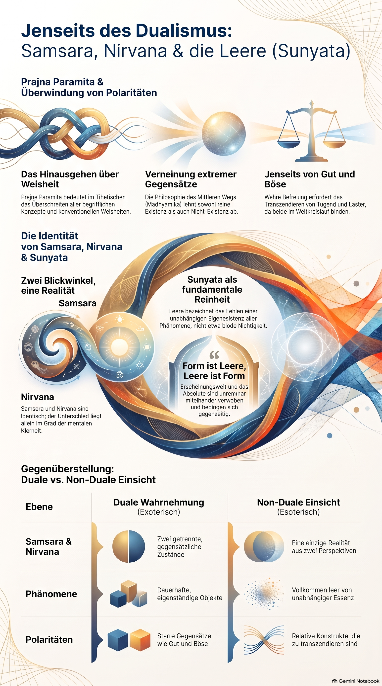
Jenseits der Illusion
PDF-Slides zum Quelltext (Deutsch).
PDF-Slides zum Quelltext – im Browser anzeigen
Quellen
- The Secret Oral Teachings in Tibetan Buddhist Sects – Alexandra David-Néel & Lama Yongden (Originalbuch; hier nur als Quelle genannt, nicht zum Download angeboten)
The secret oral teachings of Tibetan Buddhism – recorded in Alexandra David-Néel's book The Secret Oral Teachings in Tibetan Buddhist Sects (with Lama Yongden) – describe the self as an illusion: a construct of perception and habit. Across three parts, this lecture course focuses solely on the Tibetan teachings: the dismantling of the ego, the energy-nature of matter, and the dissolution of dualism – samsara and nirvana emerge as two faces of the same reality.
How Lamas Reincarnate Without a Soul
PDF slides for this talk – view in browser
Show infographic: „Demystifying Tibetan Buddhist Teachings"
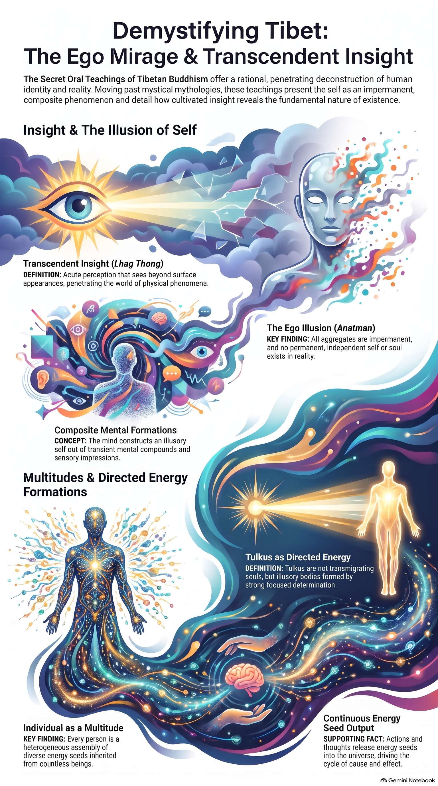
Why Your Mind Hallucinates Solid Reality
PDF slides for this talk – view in browser
Show infographic: „Energy, Perception and Storehouse Mind"

Why Samsara and Nirvana Are the Same
PDF slides for this talk – view in browser
Show infographic: „Beyond Dualism"

The Secret Oral Teachings
PDF slides on the source text (English).
PDF slides on the source text – view in browser
Sources
- The Secret Oral Teachings in Tibetan Buddhist Sects – Alexandra David-Néel & Lama Yongden (original book; named as source only, not offered for download)
Orderly Chaos – A Field Manual for the Mind
Chögyam Trungpas Orderly Chaos: The Mandala Principle beschreibt Wirklichkeit als ein spielerisches, sich selbst organisierendes Chaos, das sich im Mandala-Prinzip strukturiert: Jeder Erfahrungskreis gewinnt seine Ordnung aus dem eigenen Zentrum – dem Ego – und wehrt zugleich alles Fremde ab. Dieser englischsprachige Vortrag dekodiert die Analogien des Mandala-Prinzips als Gebrauchsanleitung für den Geist: wie wir Ordnung erzeugen, wie diese Ordnung zur Falle wird – und wie das Erkennen dieses Musters selbst der Weg ins Offene ist. Ergänzt wird das Ganze durch eine Infografik als Orientierungskarte.
Orderly Chaos: A Field Manual for the Mind
Englisch · ca. 25 Minuten.
PDF-Slides zum Podcast – im Browser anzeigen
Infografik anzeigen: „Navigating the Mandala Principle“

Navigating Orderly Chaos
PDF-Slides zum Quelltext (English).
PDF-Slides zum Quelltext – im Browser anzeigen
Quellen
- Chögyam Trungpa, Orderly Chaos: The Mandala Principle (Originalbuch; hier nur als Quelle genannt, nicht zum Download angeboten)
Self-Evidencing Agent
Wie baut sich eine Welt im Kopf zusammen, ohne dass es dafür Fenster nach außen gibt? Dieser englischsprachige Vortrag folgt den Analogien der Predictive-Processing-Theorie – vom U-Boot ohne Fenster bis zum Self-Evidencing Agent, der nur mit eigenen Vorhersagen arbeitet: Der Beobachter sieht nie die Welt selbst, sondern immer nur den Fehler zwischen Annahme und Ankunft. Wahrnehmung wird so zur kontrollierten Halluzination, die sich fortwährend selbst beweist. Die Infografik zum Vortrag fasst den Kreislauf der Vorhersagen als Bild zusammen.
Self-Evidencing Agent: How Predictive Processing Constructs Reality
Englisch · ca. 22 Minuten.
PDF-Slides zum Podcast – im Browser anzeigen
Infografik anzeigen: „Inside the Mind’s Submarine“

Quellen
- The Self-Evidencing Agent (Original-Paper; hier nur als Quelle genannt, nicht zum Download angeboten)
Quantenphysik und die Ich-Perspektive
Was bleibt von der Welt, wenn niemand hinsieht? Dieser deutschsprachige Vortrag folgt der Kollision zwischen der klassischen Intuition und der Quantenphysik: vom Bell'schen Theorem und der No-Go-Weisheit über Wigner und seine Freunde bis zur Verflechtung als Fundament der Realität – und fragt am Ende, was das alles für den Beobachter bedeutet, für die Perspektive des Ichs und für die Frage, ob es die Realität überhaupt ohne Beobachter geben kann. Die Infografik fasst die Stationen als Bild zusammen.
Existiert die Realität ohne Beobachter?
Deutsch · ca. 27 Minuten.
Infografik anzeigen: „Quantenphysik und die Realität“

Quelle
- Markus Müller, PhD & Bernardo Kastrup, PhD, PhD – „The Physics of First-Person Perspective: An Introduction“ (Video, Essentia Foundation; hier nur als Quelle genannt, nicht zum Download angeboten)
Nagarjuna’s Philosophy of Emptiness
Nāgārjuna, der große Denker des Mahāyāna-Buddhismus, demontiert in seiner Mittleren Lehre jede feste Vorstellung von Realität: Nichts besitzt ein eigenständiges, von sich aus bestehendes Wesen – alles existiert nur in Abhängigkeit. Dieser englischsprachige Vortrag folgt der Radikalität dieser Dekonstruktion: vom „Leeren Blatt“ der Existenz über die Auflösung von Ursache und Wirkung bis zur Einsicht, dass der Fluss nie derselbe ist und nie ein anderer – und dass genau diese Leere den Raum der Freiheit öffnet. Die Infografik zeichnet Nāgārjunas Mittleren Pfad als Karte nach.
Nagarjuna’s Radical Deconstruction of Reality
Englisch · ca. 20 Minuten.
PDF-Slides zum Podcast – im Browser anzeigen
Infografik anzeigen: „Nagarjuna’s Middle Path“

Infografik anzeigen: „Decoding Nagarjuna’s Middle Way“

Infografik anzeigen: „Nagarjuna’s Deconstruction of Reality“

Infografik anzeigen: „Nagarjuna’s Middle Way Philosophy“

Quelle
- Nāgārjuna – eine Übersetzung (Originaltext der Mittleren Lehre; hier nur als Quelle genannt, nicht zum Download angeboten)
Quantum Cellular Automata
Besteht Licht aus winzigen „Quanten-Pixeln“ – diskreten Zellen eines kosmischen Automaten, die sich nach einfachen Regeln fortsetzen? Dieser englischsprachige Vortrag folgt der Idee der Quanten-Zellularen Automaten: vom Voxel-Raster der Realität über die Wellengleichung als zelluläre Update-Regel bis zur Frage, ob Kontinuität selbst nur eine Illusion der Auflösung ist – Materie als Muster, Raum als Gitter, Licht als Lauf der Pixel. Die Infografik zeichnet das Quanten-Pixel-Raster als Bild.
Is Light Made of Quantum Pixels?
Englisch · ca. 19 Minuten.
PDF-Slides zum Podcast – im Browser anzeigen
Infografik anzeigen: „The Quantum Pixel Grid“
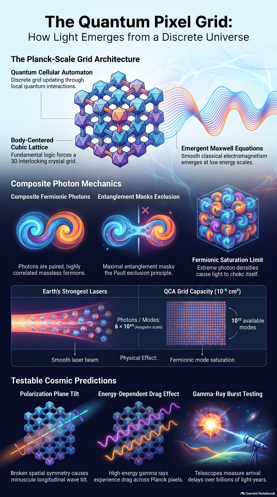
Quelle
- Quantum Cellular Automaton Theory of Light (Original-Paper; hier nur als Quelle genannt, nicht zum Download angeboten)
Mathematics and Computation
Was passiert, wenn Leicht-Lösen und Leicht-Prüfen auseinanderfallen? Dieser englischsprachige Vortrag folgt dem P-versus-NP-Problem – dem wichtigsten offenen Rätsel der Informatik – und seiner Rolle in der modernen Kryptographie: vom analogen Bauplan der Komplexitätsklassen über Einwegfunktionen und öffentliche Schlüssel bis zur Frage, was mit dem Internet geschieht, falls P einmal gleich NP sein sollte. Die Infografik fasst zusammen, wie P versus NP die digitale Sicherheit trägt.
How P versus NP Secures the Internet
Englisch · ca. 21 Minuten.
PDF-Slides zum Podcast – im Browser anzeigen
Infografik anzeigen: „P vs. NP and Digital Security“
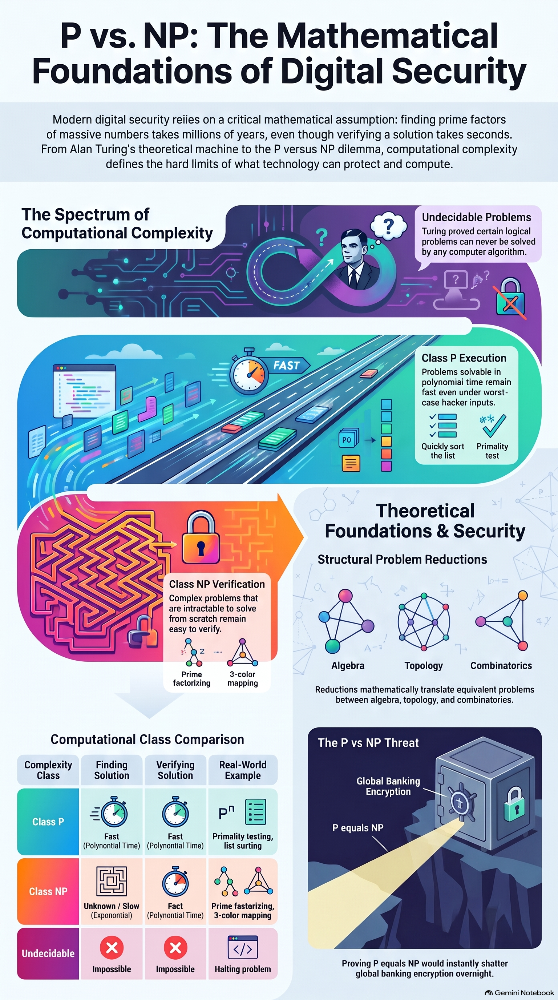
Quelle
- Avi Wigderson, Mathematics and Computation: A Theory Revolutionizing Technology and Science (Originalbuch; hier nur als Quelle genannt, nicht zum Download angeboten)
Secret of Sankhya
Steckt in den vedischen Sanskrit-Versen eine jahrtausendealte Physik? Dieser englischsprachige Vortrag folgt dem Sāṃkhya – einem der ältesten Systeme indischen Denkens – als axiomatischer wissenschaftlicher Unification: vom holographischen Modell der Wirklichkeit über Puruṣa und Prakṛti als Grundachsen bis zum direkten Vergleich mit der modernen Physik – alte Verse, neue Formeln, dieselbe Frage nach dem Ursprung der Welt. Zwei Infografiken bilden das Modell und den Vergleich ab.
Ancient Physics Encoded in Sanskrit Verses
Englisch · ca. 22 Minuten.
PDF-Slides zum Podcast – im Browser anzeigen
Infografik anzeigen: „Sāṃkhya Holographic Model“

Infografik anzeigen: „Ancient Physics vs. Modern Physics“

Quelle
- The Secret of Sankhya: Acme of Scientific Unification (Teil 2; Originalwerk, hier nur als Quelle genannt, nicht zum Download angeboten)
Matrix of Mystery
Wo treffen sich Dzogchen, die höchste Lehre des tibetischen Buddhismus, und die Quantenphysik? Dieser englischsprachige Vortrag folgt Herbert V. Guenthers Matrix of Mystery: Reality als Architektur aus Wahrnehmung und Potentialität, das Bewusstsein als Matrix, in der sich Erfahrung selbst organisiert – gelesen durch die Brille moderner Physik. Die Infografik bildet die Matrix des Bewusstseins als Schema ab.
Quantum Physics in Tibetan Dzogchen
Englisch · ca. 21 Minuten.
PDF-Slides zum Podcast – im Browser anzeigen
Infografik anzeigen: „Matrix of Consciousness“

Quelle
- Herbert V. Guenther, Matrix of Mystery: Scientific and Humanistic Aspects of Dzogs-chen Thought (Originalbuch; hier nur als Quelle genannt, nicht zum Download angeboten)
Energy Is a Verb, Not a Noun
Energie ist kein Stoff, der fließt, sondern ein Prozess, der geschieht. Dieser englischsprachige Vortrag folgt der physikalischen und philosophischen Lesart des Energiebegriffs – von der Energie als Verb über das Tai Chi als geübte Prozesslehre bis zum Herz-Sutra als Erfahrungswissen derselben Einsicht. Zwei Infografiken bilden den Bogen von Physik und Philosophie der Energie ab.
Energy Is a Verb, Not a Noun
Englisch · ca. 22 Minuten.
PDF-Slides zum Podcast – im Browser anzeigen
Infografik anzeigen: „Energy Is a Verb“
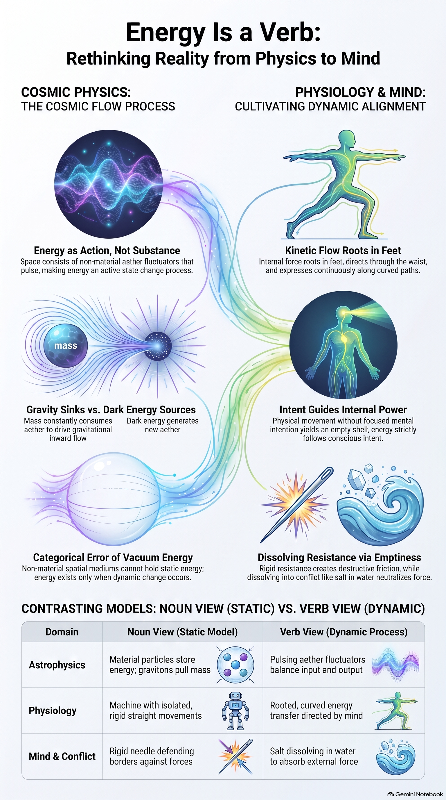
Infografik anzeigen: „Physics and Philosophy of Energy“
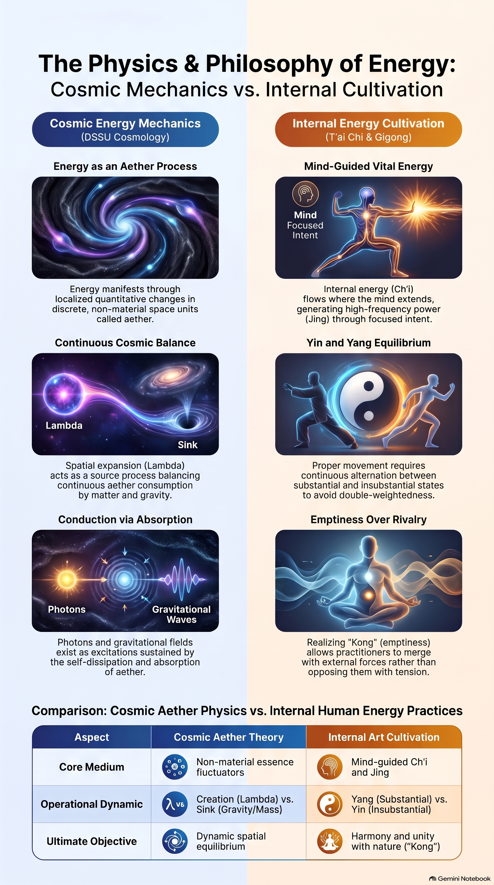
Quellen
- Die Quelltexte dieses Themenkreises – Energy Process, Tai-Chi-Classics und Heart Sutra – sind in den jeweiligen Abschnitten genannt.
The Fundamental Process of Energy in the Universe
Konsumiert Materie Raum, um zu existieren? Dieser englischsprachige Vortrag folgt der These vom fundamentale Prozess der Energie im Universum: Materie als selbstverzehrender Prozess, der Raum verbraucht und daraus Bestand gewinnt – vom Selbstverzehr des Kosmos bis zu den Konsequenzen für unser Bild von Existenz. Die Infografik fasst das Prinzip „How Matter Consumes Space“ als Bild zusammen.
How Matter Consumes Space to Exist
Englisch · ca. 24 Minuten.
PDF-Slides zum Podcast – im Browser anzeigen
Infografik anzeigen: „How Matter Consumes Space“
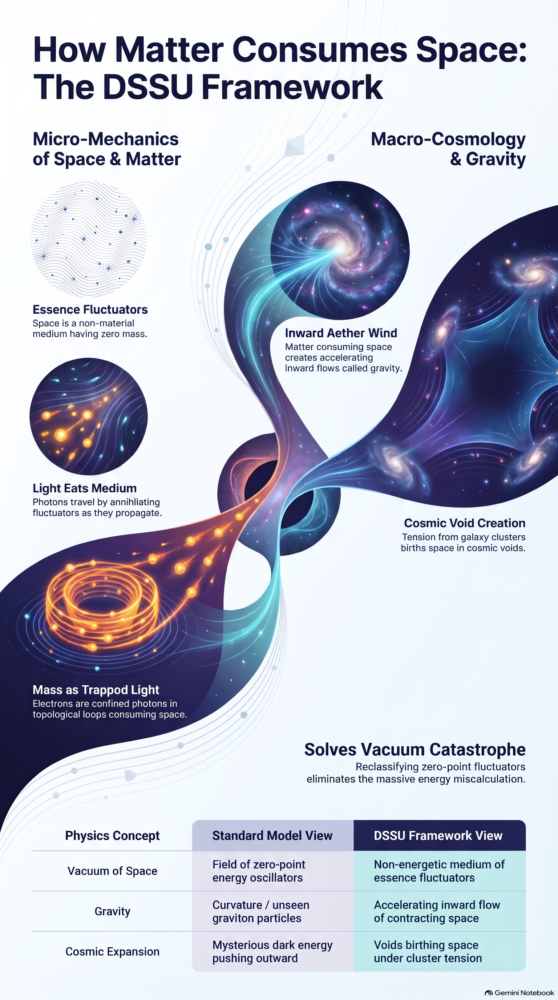
Quellen
- C. Ranzan, The Fundamental Process of Energy – Part 1 & Part 2 (Original-Papers; hier nur als Quelle genannt, nicht zum Download angeboten)
Tʻai Chi Classics
Wie täuschte Tai Chi ein ganzes Kaiserreich? Dieser englischsprachige Vortrag folgt Waysun LIAOs Tʻai Chi Classics: von den überlieferten Schriften der alten Meister über die Energie-Lehre (Chʻi) und die innere Struktur der Bewegung bis zur Geschichte, in der eine Kampftechnik zur Staatsaffäre wurde – und zur Meditation wurde. Die Infografik zeichnet die Entwicklungslinie des Tai Chi als Bild nach.
How Tai Chi Fooled an Empire
Englisch · ca. 25 Minuten.
PDF-Slides zum Podcast – im Browser anzeigen
Infografik anzeigen: „Tai Chi History and Philosophy“
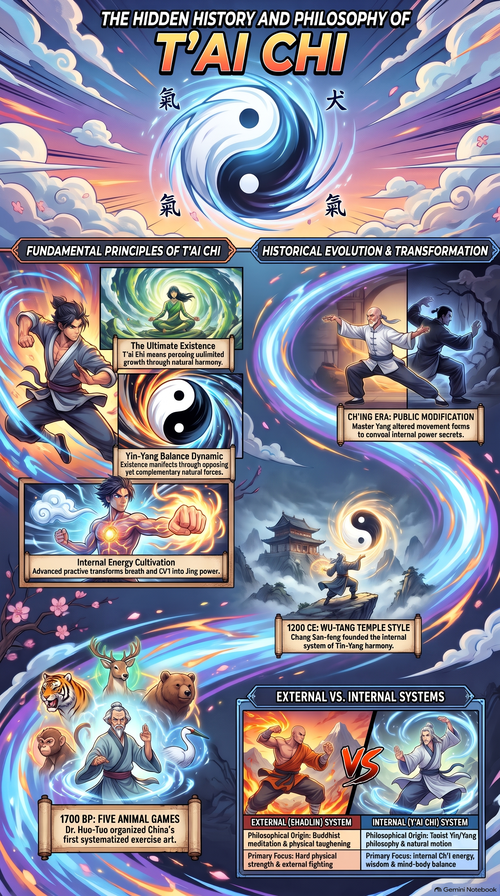
Quelle
- Waysun Liao, Tʻai Chi Classics (Originalbuch; hier nur als Quelle genannt, nicht zum Download angeboten)
Tai Chi Spiral Energy
Woher kommt die verblüffende Kraft der Tai-Chi-Meister, ohne Muskelmassen und Spannung? Dieser englischsprachige Vortrag folgt der Spiralenergie (Chʻan Ssu Chin): von der Schraubenfeder im Körperbau über die Verbindung von Sehnen, Faszien und Wirbelsäule bis zur Biomechanik, die klassische Angriffe wirksam macht – innere Kraft als Architektur, nicht als Mysterium. Die Infografik zeichnet die Spiralenergie im Tai Chi als Bild nach.
The Lethal Biomechanics of Tai Chi
Englisch · ca. 22 Minuten.
PDF-Slides zum Podcast – im Browser anzeigen
Infografik anzeigen: „Tai Chi Internal Power Biomechanics“
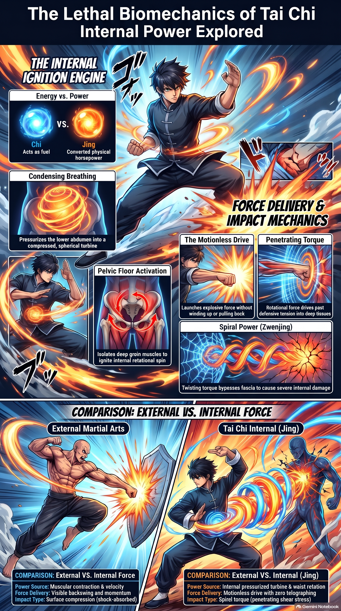
Quelle
- Waysun Liao, Tʻai Chi Classics (Originalbuch; hier nur als Quelle genannt, nicht zum Download angeboten)
The Internal Mechanics of Tʻai Chi Power
Wie entsteht explosive Tai-Chi-Kraft ohne Muskelanspannung? Dieser englischsprachige Vortrag folgt der inneren Mechanik des Nachgebens: Yielding nicht als Passivität, sondern als aktive Technik, die die Energie des Angreifers aufnimmt, umleitet und schlagartig zurückgibt – von den klassischen Prinzipien der Liao-Überlieferung bis zur Physik des Moments, in dem Weichheit plötzlich explosiv wird. Die Infografik zeichnet die Wissenschaft der inneren Kraft als Bild nach.
How Yielding Generates Explosive Tʻai Chi Power
Englisch · ca. 23 Minuten.
PDF-Slides zum Podcast – im Browser anzeigen
Infografik anzeigen: „Physics of Yielding in Tai Chi“
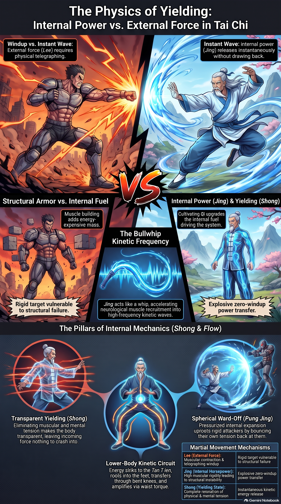
Infografik anzeigen: „Explosive Tai Chi Power“
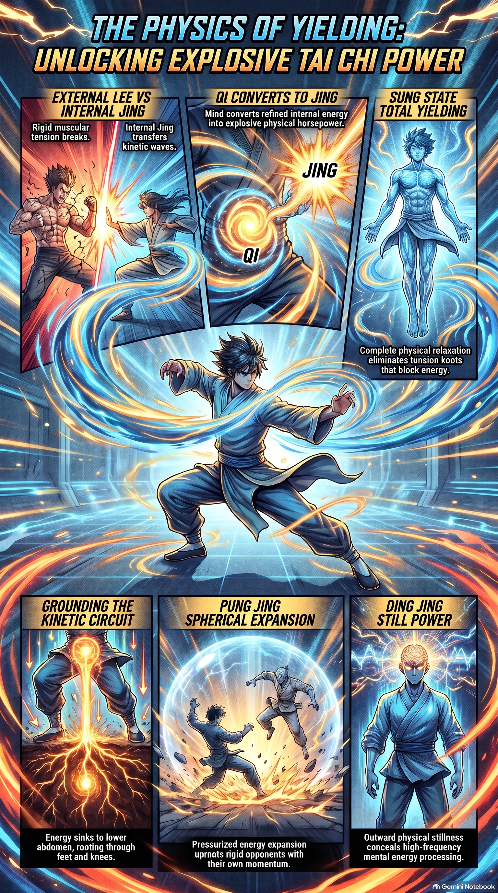
Quelle
- Waysun Liao, Tʻai Chi Classics (Originalbuch; hier nur als Quelle genannt, nicht zum Download angeboten)
Yi Yuan Ti
Yi Yuan Ti – die „Essenz unseres Selbst“ in Zhineng Qigong – als Bewusstseinstechnologie gelesen: Dieser englischsprachige Vortrag beschreibt das Yiyuanti als informationverarbeitende Schicht des Selbst, die sich durch einlaufende Muster verunreinigen lässt – Gedanken-Malware. Der Weg hinaus: das Bewusstsein erkennen, alte Muster löschen und das Yiyuanti „upgraden“. Die Infografiken zeichnen die Prinzipien und die Reinigung als Bild nach.
Clearing Mind Malware with Yi Yuan Ti
Englisch · ca. 23 Minuten.
PDF-Slides zum Podcast – im Browser anzeigen
Infografik anzeigen: „Clearing Mind Malware“
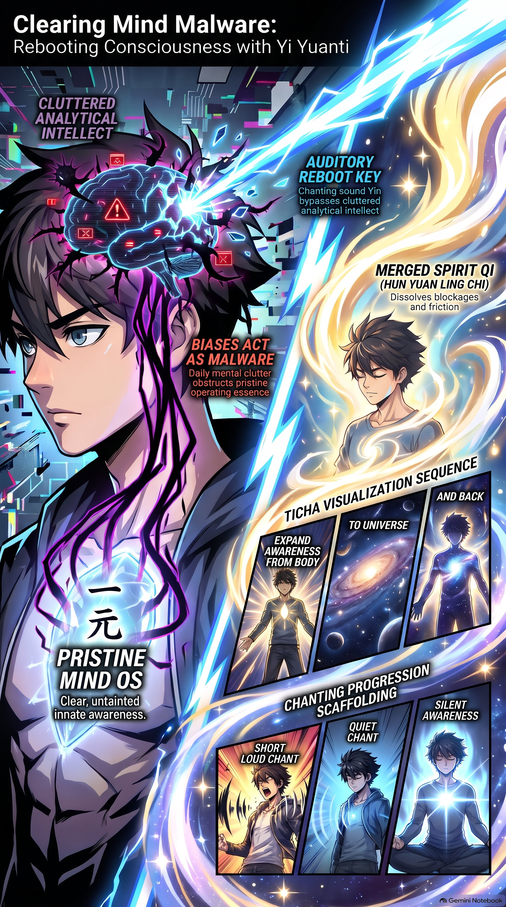
Infografik anzeigen: „Principles of Yi Yuan Ti“
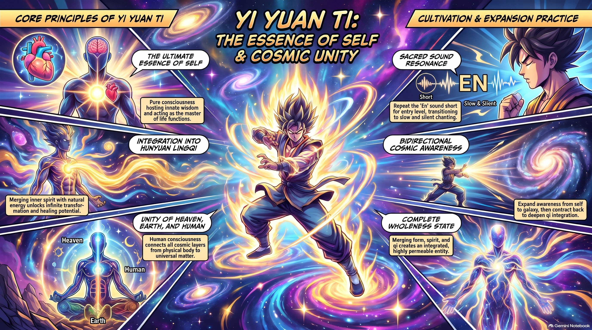
Quellen
- Yi Yuan Ti – The Essence of Our Self (2014), Dr. Pang Ming / Zhineng Qigong: YouTube-Original (hier nur als Quelle verlinkt)
Heart Sutra
Was zeigt eine Chi-Power-Demonstration zum Herz-Sutra wirklich – Kraft oder Harmonie? Dieser Themenkreis begleitet das Herz-Sutra der Prajñāpāramitā auf dreifache Weise: als Vortrag über die Kunst des Verschmelzens und das Paradox, dass Standhaftigkeit ausbrennt; als Studie über die Weisheit des Kong – vom Rivalität zum Harmonie; und als Filmaufnahme, in der Lama Dondrup Dorje die Lehre zeigt statt erklärt.
Why Standing Your Ground Causes Burnout
Englisch · ca. 22 Minuten.
PDF-Slides zum Podcast – im Browser anzeigen
Infografik anzeigen: „The Art of Merging“
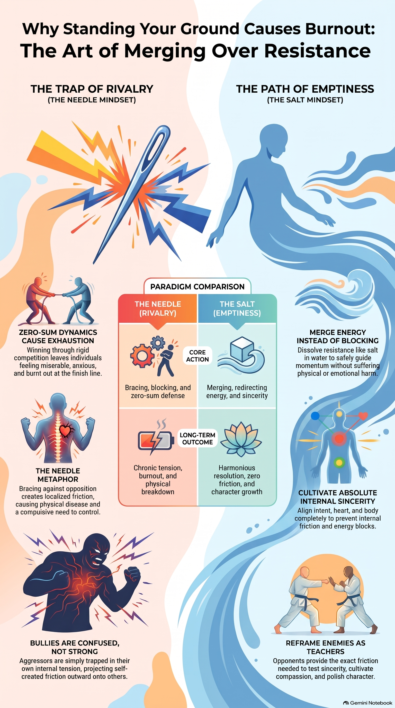
Infografik anzeigen: „Physics of Non-Resistance“
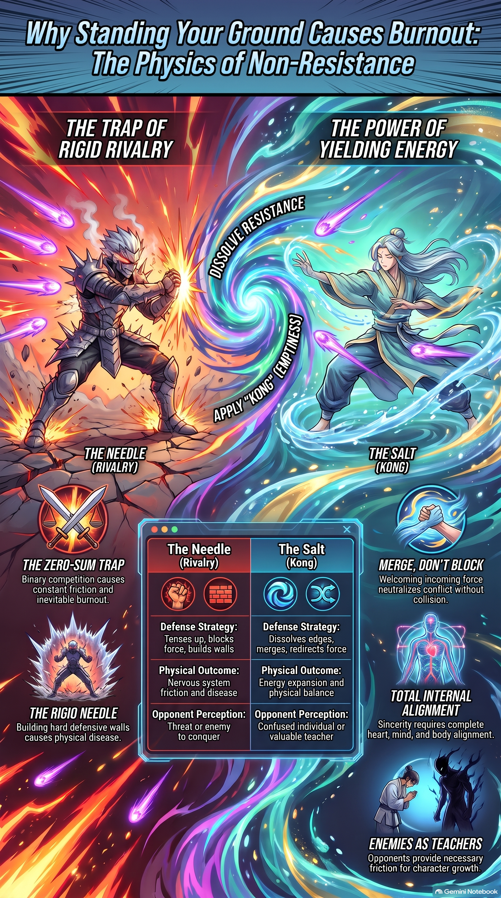
The Art of Kong
PDF-Slides zur Weisheit des Kong (English).
PDF-Slides – im Browser anzeigen
Infografik anzeigen: „Wisdom of Kong – Rivalry to Harmony“
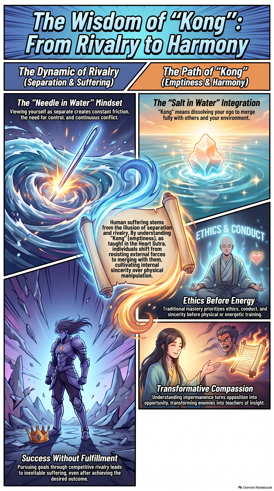
Quellen
- The Heart Sutra – Prajñāpāramitā-Hṛdaya (Originaltext; hier nur als Quelle genannt, nicht zum Download angeboten)
- Chi-Power-Demonstration von Lama Dondrup Dorje: YouTube-Original (hier nur als Quelle verlinkt)
Heat
Enthält heißer Kaffee Wärme? Die Thermodynamik sagt: Nein – Wärme ist kein Vorrat im Körper, sondern nur der Übergang von Energie zwischen Systemen. Dieser deutschsprachige Vortrag räumt mit dem Alltagsbild der Wärme als Substanz auf: von der Temperatur als Messgröße über den Wärmefluss als Prozess bis zur Frage, was ein Körper dann überhaupt „in sich“ trägt.
Warum heißer Kaffee keine Wärme enthält
Deutsch · ca. 26 Minuten.
Infografik anzeigen: „Wärme in der Thermodynamik“
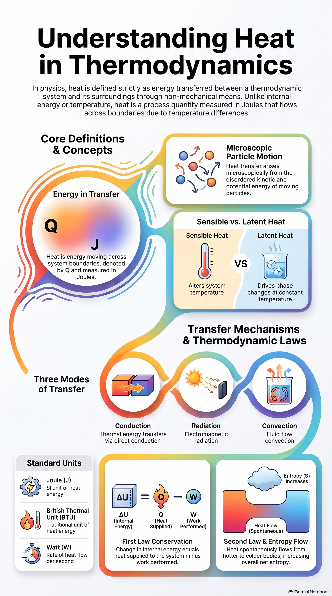
Does hot coffee contain heat? Thermodynamics says: no. Heat is not a store inside a body but the transfer of energy between systems. This English-language talk dismantles the everyday picture of heat as a substance – from temperature as a measure to heat flow as a process, ending with the question of what a body actually carries “within”.
Why Nothing Contains Heat
Englisch · ca. 24 Minuten.
Quelle
- Heat – Wikipedia-Artikel (hier nur als Quelle verlinkt)
Inventing Temperature
Unser Thermometer braucht Schmutz – zumindest einen Fixpunkt. Dieser deutschsprachige Vortrag folgt Hasok Changs Inventing Temperature: wie die Messung der Temperatur sich selbst messen musste, welch absurde Wege die Wissenschaft über fixe Punkte, Schmelzenden Eis und unterschätzte Verunreinigungen ging – und wie aus Zirkularität messbare wissenschaftliche Wahrheit wurde.
Warum unser Thermometer Schmutz braucht
Deutsch · ca. 25 Minuten.
Infografik anzeigen: „Entwicklung der Temperaturmessung“
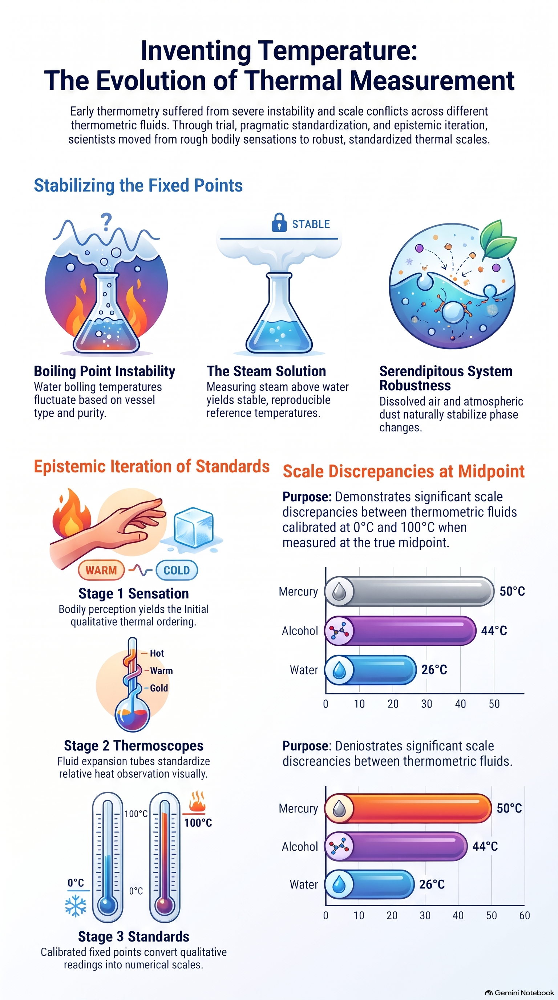
Our thermometer needs dirt – at least a fixed point. This English-language talk follows Hasok Chang’s Inventing Temperature: how the measurement of temperature had to measure itself, the absurd history of fixed points, melting ice and underestimated impurities – and how circularity became measurable scientific truth.
The Absurd History of the Thermometer
Englisch · ca. 21 Minuten.
Quelle
- Hasok Chang, Inventing Temperature: Measurement and Scientific Progress (Originalbuch; hier nur als Quelle genannt, nicht zum Download angeboten)